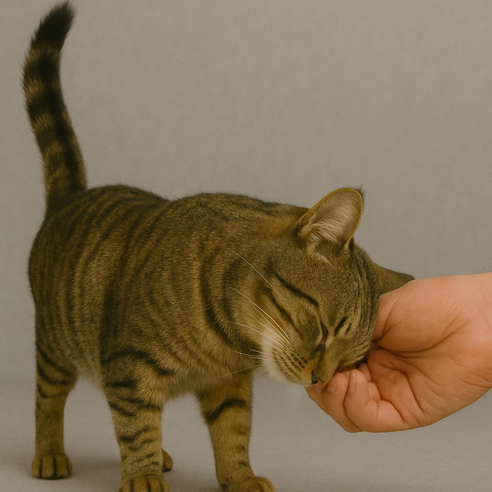

Listen
Home
Petting Primer
Observe
Listen
Knowledge Check #1
Knowledge Check #2
Listen to Determine if it is Safe to Begin Petting
Play the two audio options below the pictures to listen to two different cat vocalizations.
The first (the scared cat) hisses.
The second (the relaxed cat) purrs.
Scared Cat
|

Relaxed Cat
|